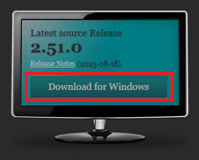
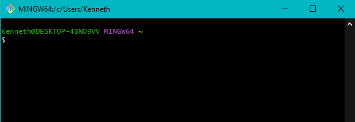

🐧 Linux
Abre la consola y ejecuta los comandos para descargar e instalar Git.
Ubuntu / Debian
sudo apt update
sudo apt install gitFedora / CentOS / RHEL
sudo dnf install gitArch Linux / Manjaro
sudo pacman -S git🖥️ Windows
1. Ir al sitio oficial git-scm.com
2. Descargar el instalador de Git para Windows
https://git-scm.com/download/win3. Ejecutar el instalador. Recomendamos:
- ✔ Activar la opción "Git Bash Here"
- ✔ Elegir "Use Git from Git Bash only" cuando pregunte por PATH
- ✔ Mantener las demás opciones por defecto

Una vez instalado correctamente, la consola de GitBash se ve de esta manera:
🍏 macOS
1. Instalar Homebrew (si no lo tienes instalado):
/bin/bash -c "$(curl -fsSL https://raw.githubusercontent.com/Homebrew/install/HEAD/install.sh)"Instalación de Homebrew en macOS
2. Instalar Git usando Homebrew:
brew install gitInstalación de Git usando Homebrew
✅ TODOS (Después de instalar)
Verificar la versión
git --versionConfiguración Inicial de Git
Configura tu usuario y correo electrónico para identificar tus commits (IMPORTANTE: debe coincidir con tu usuario y correo de GitHub):
git config --global user.name "Tu Nombre"
git config --global user.email "tuemail@ejemplo.com"Verifica que la configuración se haya aplicado correctamente:
git config --list